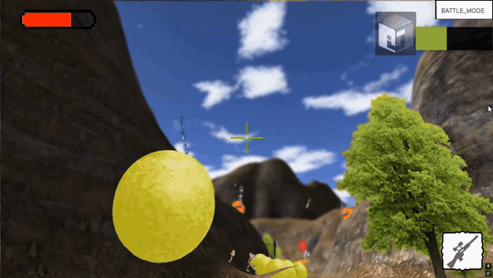
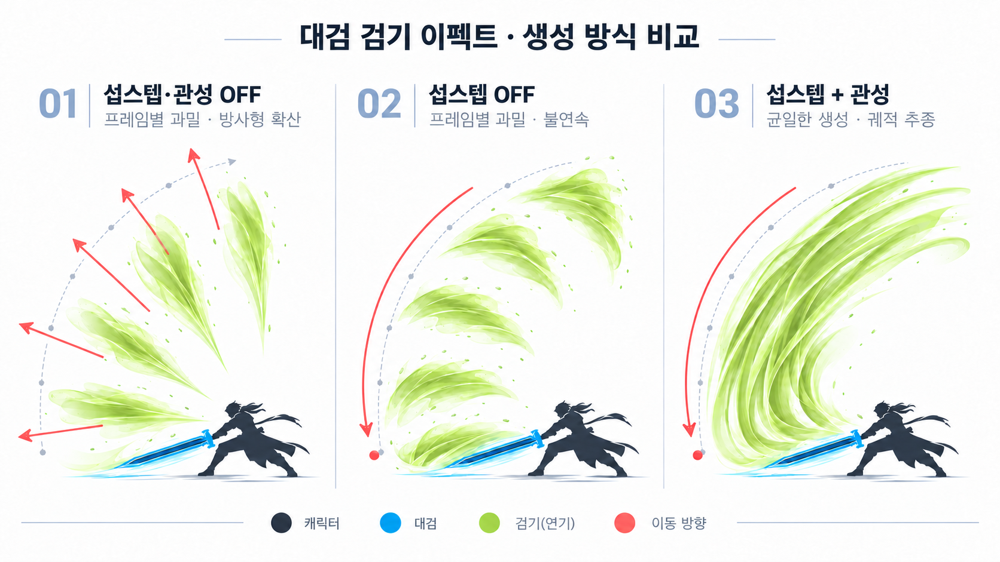

실제 영상·GIF 자료를 활용해 기존 구성의 디자인만 바꿔 본 시각 시안이야. 아래 세 가지는 별도의 후보이며, 현재 포트폴리오의 구성과 배포본은 그대로 유지돼.
여백이 넓은 아이보리 바탕, 낮은 채도의 청록, 단정한 이미지 중심 구성. 작업의 기술성과 디자인 감각을 함께 보여주는 방향.
게임 그래픽스, 물리 시뮬레이션, 제작 도구. 결과를 먼저 보여주고 구현 과정을 짧게 설명합니다.
프로젝트 살펴보기 ↗
현 사이트의 짙은 색감을 유지하되, 눈금·좌표·패널 등 기술적 그래픽 요소를 강화. 그래픽스 프로그래머로서의 인상이 가장 선명한 방향.
파티클의 방출·이동부터 자체 물리 엔진과 렌더링까지.

FIG 01 / PARTICLE PATH강한 대형 타이포그래피, 주황색 포인트, 비대칭 분할. 한 번에 시선을 끌지만 기술 자료가 많은 페이지에서는 밀도를 조절해야 하는 방향.
움직임을 수학으로 해석하고 실시간 화면 위에 구현하는 클라이언트 그래픽스.